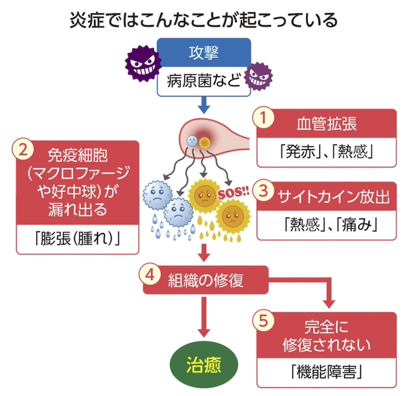

公開日：2026年8月 ｜ 最終更新：2026年8月
「炎症」とは、体の中に細菌やウイルスなどの病原体が侵入したり、怪我をしたりしたときに、
体が自分を守り、傷ついた組織を修復しようとする正常な防御反応（免疫反応）のことをいいます。
決して悪いことばかりではなく、体が戦って治そうとしている証拠でもあります。
炎症においては、患部の血管が拡張して血液が流れ込んでくるため赤くなります。
急性の炎症で見られる特徴的な症状（表１）と炎症の経過期間による分類（表２）を下に示します。
| 徴候（ちょうこう） | 症状 |
|---|---|
| 発赤（ほっせき） | 血管が広がって血液が増えるため、赤くなる |
| 熱感（ねっかん） | 血流が増えることで、その部分が熱っぽくなる |
| 腫脹（しゅちょう） | 血管から血液の水分が染み出すため、腫れ上がる |
| 疼痛（とうつう） | 腫れによって神経が圧迫されたり、 痛みを起こす物質が出て痛みを感じる |
| 機能障害 | 腫れや痛みによって、その部位が普段通りに動かせなくなる |
| 炎症 | 急性炎症 | 慢性炎症 |
|---|---|---|
| 期間 | 数日〜数週間 | 数か月〜何年も |
| 原因 | 病原体 有害物質 など | 原因物質が排除されず蓄積 継続的なストレス 自己免疫反応など |
| 症状 | 原因物質が除去され、 組織が修復されると収束 | 炎症・修復が長期化 症状が進行 |
| 例 | 風邪、けが、手術 帯状疱疹など | 動脈硬化症、２型糖尿病 がん、歯周病、変形性関節症 慢性関節リウマチ アルツハイマー病との関連 |
体の中でトラブルが起きると、以下のようなステップで炎症が進みます。

身近な急性炎症（ひねった、ぶつけた等）の初期対応としては、「RICE（ライス）処置」が基本です。
注意：痛みが激しい場合、熱が高い場合、あるいは慢性的に体調が優れない場合は、自己判断せず医療機関（内科、整形外科、皮膚科など）を受診してください。
近年、医学・科学界で非常に注目されているのが、炎症（Inflammation）と老化（Aging）の深い関係です。
この2つを組み合わせた「インフラメイジング（Inflammaging＝慢性炎症性老化）」という造語ができるほど、両者は切っても切れない関係にあります。
私たちが風邪をひいたときや怪我をしたときに起こる「急性の炎症」は、体を守るための正常な防御反応です。しかし、加齢に伴って起こる炎症は異なります。
特徴は「自覚症状がないほど微弱で、なおかつ持続的（慢性）に全身でくすぶり続ける炎症」です。
その結果、この慢性の炎症が、正常な細胞や組織を少しずつ傷つけ、老化を加速させたり、年齢とともに増える病気の引き金になったりします。
主な原因として、以下の3つのメカニズムが挙げられます。
(1) 細胞老化と「SASP（サスプ）」
細胞は分裂を繰り返すうちに、それ以上分裂できない「老化細胞」になります。本来なら免疫システムによって除去されますが、加齢とともに体内に蓄積していきます。この老化細胞は、ただ眠っているわけではなく、SASP（細胞老化随伴分泌表現型）と呼ばれる現象を起こし、周囲に炎症を引き起こす物質（サイトカインなど）を撒き散らします。
これが周囲の健康な細胞まで老化させる「ゾンビ細胞」のような動きをします。
(2) 免疫システムの老化（免疫老化）
年齢とともに、体内の異物や老化細胞を排除する免疫細胞（T細胞やマクロファージなど）の機能が低下します。これにより、本来なら片付けられるはずの「ゴミ（壊れた細胞の破片など）」が体内に残り続け、それが常に免疫を刺激して炎症が続いてしまいます。
(3) ミトコンドリアの機能低下
細胞のエネルギー工場である「ミトコンドリア」が加齢とともに劣化すると、エネルギーを作る過程で大量の活性酸素（ROS）を排出します。これが細胞を酸化（サビつき）させ、慢性的な炎症の引き金になります。
インフラメイジングは、単に見た目が老けるだけでなく、あらゆる加齢性疾患のベースにあると考えられています。
| 影響を受ける部位 | 主な疾患・症状 |
|---|---|
| 血管・心臓 | 動脈硬化、心筋梗塞、脳卒中（血管の壁が炎症で傷つく） |
| 脳・神経 | アルツハイマー型認知症（脳内の慢性炎症がアミロイドβの蓄積や神経破壊を促す） |
| 骨・関節 | 変形性関節症、骨粗鬆症 |
| 代謝 | 2型糖尿病（炎症がインスリンの働きを悪化させる） |
| その他 | がん、筋肉量の減少（サルコペニア） |
完全に老化を止めることはできませんが、日常生活の工夫で慢性炎症のレベルを低く抑える（インフラメイジングを緩やかにする）ことは可能です。
▪️抗炎症を意識した食事
| 摂りたいもの | オメガ3脂肪酸（青魚、えごま油）、ポリフェノール（緑茶、ベリー類、トマト）、抗酸化ビタミン（野菜、果物） |
|---|---|
| 控えたいもの | 揚げ物（酸化した油）、過剰な糖質（体に「糖化」を起こし炎症を誘発する） |
▪️適度な運動
定期的な有酸素運動や軽い筋トレは、体内の炎症性サイトカインを減らし、抗炎症物質を増やすことが分かっています。（※激しすぎる運動は逆効果になるので注意）
▪️質の良い睡眠とストレスケア
睡眠不足や慢性的な精神的ストレスは、交感神経を過剰に刺激し、炎症物質の分泌を促してしまいます。
▪️腸内環境を整える
腸のバリア機能が衰えると、腸内細菌の成分が血液に漏れ出し全身の炎症に繋がります。発酵食品や食物繊維を意識しましょう。
▪️紫外線・酸化ストレスを抑える
強い紫外線や喫煙は、活性酸素と炎症を通じて肌や血管などの老化を進める代表的な要因です。
▪️肥満予防
「肥満」、特に内臓脂肪の蓄積は、慢性炎症の大きな原因の一つです。
適正体重を維持することも、慢性炎症対策として重要です。
「慢性炎症」は、いわば「体の中で常に小さなボヤが起きている状態」です。日々の生活習慣でこのボヤを消していくことが、健康寿命を延ばす最大のカギになります。
老化細胞は「SASP」と呼ばれる炎症性物質を分泌し、周囲の細胞も老化させることは上述しました。
免疫系の老化や異常が、皮膚や臓器の老化を炎症経由で進める仕組みが報告されています。
「炎症マーカー」の低い人ほど健康寿命が長い傾向が報告されています。
「炎症マーカー」とは、体のどこかで炎症が起きているときに、血液などで増えたり変化したりする物質の総称です。
血液検査で測ることが多く、代表的なものに次のようなものがあります。
| マーカー名 | 主な意味 | よく使われる場面 |
|---|---|---|
| CRP | 急性の炎症の強さ | 感染症、手術後、膠原病など |
| ESR（赤沈） | ゆるやかな炎症の有無 | 慢性炎症、膠原病など |
| フェリチン | 貯蔵鉄と炎症の指標 | 慢性炎症、自己免疫疾患など |
| サイトカイン類（IL‑6など） | 炎症反応を動かす物質 | 重症感染症、敗血症など |
慢性炎症が続くと、体の中では次のようなことが起きやすくなります。
| 「変化」 | 何が起きるか | 結果として起きやすいこと |
|---|---|---|
| 活性酸素増加 | 細胞や血管を酸化ストレスで傷つける | 動脈硬化、肌の老化など |
| 修復の遅れ | 傷つくスピードに修復が追いつかない | 組織が硬くもろくなる |
| 免疫バランス乱れ | 攻撃モードが続き自己免疫トラブルも | 自己免疫疾患の土台になる可能性 |
| だるさ・疲労感 | 炎症物質が脳や全身に影響 | 「なんとなく疲れが抜けない」状態 |
研究では、慢性炎症が多くの「現代病」や「加齢関連の病気」の共通の土台になっているとされています。
| 関連領域 | どんな影響が指摘されるか | ざっくりしたイメージ |
|---|---|---|
| 血管・心臓 | 動脈硬化、心筋梗塞などのリスク上昇 | 血管の内側が傷み詰まりやすくなる |
| 代謝 | 糖尿病、脂質異常症、肥満悪化 | 血糖や脂質のコントロールが乱れる |
| 脳・神経 | 認知機能低下、認知症リスクとの関連 | 脳にも慢性の炎症刺激が続く |
| がん | 長期の炎症部位でがん発生リスク上昇 | 組織修復のエラーが積み重なる |
| 老化全般 | しわ、たるみ、筋力低下など「老け」の加速 | インフラメイジングと呼ばれる加速老化 |
このように「慢性炎症＝老化と生活習慣病の土台」という考え方が一般的になりつつあります。
「炎症」そのものは「体を守るための正常な反応」です。
しかし弱い炎症が長く続く慢性炎症になると、正常な細胞や組織まで傷つけてしまいます。
その結果として、動脈硬化や糖尿病、認知症、がん、老化の加速など、さまざまな不調や病気の土台になるといわれています。
慢性炎症は、膠原病や自己免疫疾患、炎症性腸疾患など、特定の病気のサインのこともあります。
発熱、関節痛、体重減少、強いだるさなどが続く場合は、市販の対策だけでなく、内科や専門科を受診して原因を調べてもらうことが大切です。